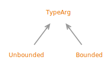

Interface Signature.TypeArg
- All Known Subinterfaces:
Signature.TypeArg.BoundedPREVIEW,Signature.TypeArg.UnboundedPREVIEW
public static sealed interface Signature.TypeArg
permits Signature.TypeArg.UnboundedPREVIEW, Signature.TypeArg.BoundedPREVIEW
TypeArg is a preview API of the Java platform.
Preview features may be removed in a future release, or upgraded to permanent features of the Java platform.
Models the type argument.
- Sealed Class Hierarchy Graph:
- 
- Since:
- 22
{kind=link}
-
Nested Class Summary
Nested ClassesModifier and TypeInterfaceDescriptionstatic interfacePreview.Models a type argument with an explicit bound type.static interfacePreview.Models an unbounded type argument*. -
Method Summary
Static MethodsModifier and TypeMethodDescriptionbounded(Signature.TypeArg.Bounded.WildcardIndicatorPREVIEW wildcard, Signature.RefTypeSigPREVIEW boundType) Returns a bounded type arg.extendsOf(Signature.RefTypeSigPREVIEW boundType) Returns an upper-bounded type arg.of(Signature.RefTypeSigPREVIEW boundType) Returns a bounded type arg.superOf(Signature.RefTypeSigPREVIEW boundType) Returns a lower-bounded type arg.Returns an unbounded type arg.
-
Method Details
-
of
Returns a bounded type arg.- Parameters:
boundType- the bound- Returns:
- a bounded type arg
- Since:
- 23
-
unbounded
Returns an unbounded type arg.- Returns:
- an unbounded type arg
- Since:
- 23
-
extendsOf
Returns an upper-bounded type arg.- Parameters:
boundType- the upper bound- Returns:
- an upper-bounded type arg
- Since:
- 23
-
superOf
Returns a lower-bounded type arg.- Parameters:
boundType- the lower bound- Returns:
- a lower-bounded type arg
- Since:
- 23
-
bounded
static Signature.TypeArg.BoundedPREVIEW bounded(Signature.TypeArg.Bounded.WildcardIndicatorPREVIEW wildcard, Signature.RefTypeSigPREVIEW boundType) Returns a bounded type arg.- Parameters:
wildcard- the wild cardboundType- optional bound type- Returns:
- a bounded type arg
- Since:
- 23
-
TypeArgwhen preview features are enabled.